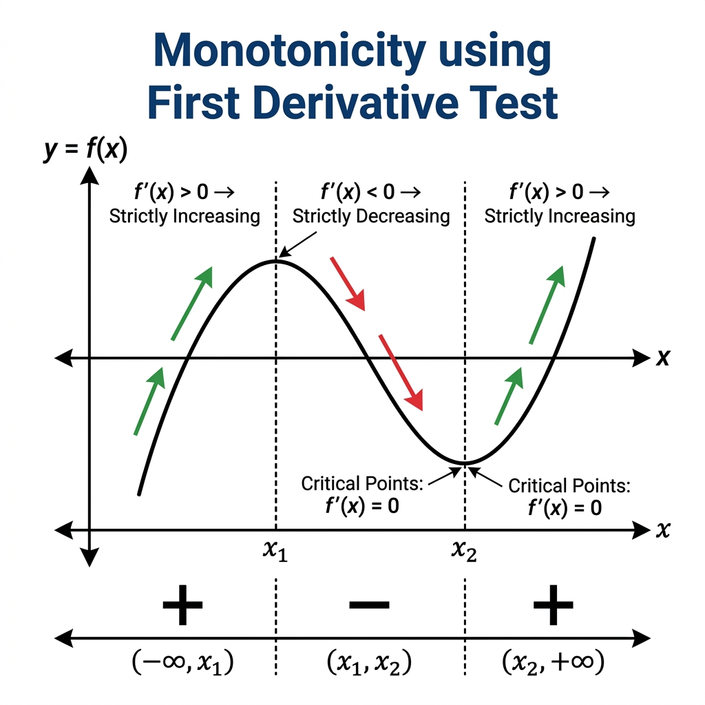
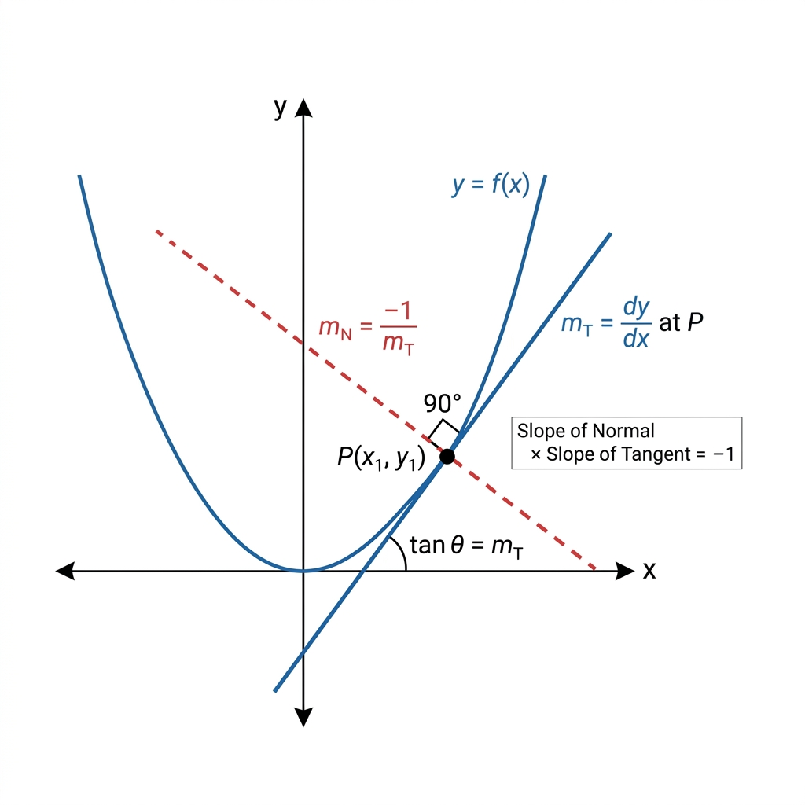

Class 12 Mathematics • Comprehensive Chapter Notes
🌐 vardaanlearning.com📞 9508841336
Chapter 6: Application of Derivatives
Board | JEE Mains | NDA | CDS — All Concepts & All Problem Types with Detailed Solutions
📖 To the Student: AOD is the most application-rich chapter of Class 12. Board exams guarantee 5–6 mark optimization and tangent-normal questions. JEE Mains asks 2–3 questions on monotonicity and local maxima. NDA/CDS tests rate-of-change and kinematics. This file covers every concept and every type of problem you will encounter. Read theory first, then solve each practice problem fully before looking at the solution.
1. Rate of Change of Quantities
Core Idea (NCERT §6.1): The derivative $\dfrac{dy}{dx}$ is the instantaneous rate of change of $y$ with respect to $x$. In physical problems, quantities change with time $t$, so we use the Chain Rule.
The Chain Rule for Rates
Master Formula
If $y$ depends on $x$, and $x$ depends on time $t$:
$$\frac{dy}{dt} = \frac{dy}{dx} \cdot \frac{dx}{dt}$$
Sign Convention:
• $\dfrac{dy}{dt} > 0$ → $y$ is increasing with time.
• $\dfrac{dy}{dt} < 0$ → $y$ is decreasing with time.
Algorithm for Related-Rates Problems:
Read carefully: identify the given rate and the required rate.
Write the geometric formula relating the variables (Area, Volume, etc.).
Differentiate both sides with respect to time $t$.
Substitute all known values. Solve for the unknown rate.
Attach correct units to the answer.
Type A — Geometric Bodies (Sphere, Cube, Cylinder, Cone)
Problem 1 — Sphere BoardQ: The radius of a spherical balloon increases at 2 cm/s. Find the rate of increase of (a) Volume and (b) Surface Area when radius is 5 cm.
Problem 2 — Ripple / Circle BoardNDAQ: A stone dropped into a pond creates circular ripples. The radius increases at 5 cm/s. How fast is the area increasing when radius = 12 cm?
Problem 3 — Cube BoardQ: The side of a cube is increasing at 3 cm/s. Find the rate of increase of (a) volume and (b) total surface area when the side is 10 cm.
Problem 4 — Water Tank (Inverted Cone) BoardJEEQ: Water is draining from an inverted conical tank (vertex down) at 2 m³/min. The tank has height 10 m and radius 5 m at the top. How fast is the water level falling when the water depth is 6 m?
By similar triangles: $\dfrac{r}{h} = \dfrac{5}{10} = \dfrac{1}{2}$, so $r = \dfrac{h}{2}$.
Volume: $V = \dfrac{1}{3}\pi r^2 h = \dfrac{1}{3}\pi \left(\dfrac{h}{2}\right)^2 h = \dfrac{\pi h^3}{12}$
$\dfrac{dV}{dt} = \dfrac{\pi h^2}{4} \dfrac{dh}{dt}$
Given $\dfrac{dV}{dt} = -2$ m³/min (draining). At $h = 6$:
$-2 = \dfrac{\pi(36)}{4}\dfrac{dh}{dt} \Rightarrow \dfrac{dh}{dt} = \dfrac{-8}{36\pi} = \boxed{-\dfrac{2}{9\pi} \text{ m/min}}$
The water level is falling at $\dfrac{2}{9\pi}$ m/min.
Type B — Shadow, Ladder & Distance Problems
Problem 5 — Ladder Problem BoardQ: A 5 m ladder leans against a wall. Its foot slides away at 1 m/s. How fast is the top sliding down when the foot is 3 m from the wall?
Problem 6 — Shadow Problem BoardNDAQ: A man 2 m tall walks at 5 m/min away from a lamp post 8 m high. Find the rate at which (a) his shadow lengthens, and (b) the tip of his shadow moves.
Let the man be $x$ m from the post and his shadow have length $s$ m.
By similar triangles: $\dfrac{8}{x+s} = \dfrac{2}{s} \Rightarrow 8s = 2(x+s) \Rightarrow 6s = 2x \Rightarrow s = \dfrac{x}{3}$ (a) $\dfrac{ds}{dt} = \dfrac{1}{3}\dfrac{dx}{dt} = \dfrac{1}{3}(5) = \boxed{\dfrac{5}{3} \text{ m/min}}$ (shadow lengthens) (b) Tip of shadow is at distance $x + s = x + x/3 = \dfrac{4x}{3}$ from post.
$\dfrac{d}{dt}(x+s) = \dfrac{dx}{dt} + \dfrac{ds}{dt} = 5 + \dfrac{5}{3} = \boxed{\dfrac{20}{3} \text{ m/min}}$
Problem 7 — Two Cars Moving NDAQ: Two cars start from the same point. One travels east at 60 km/h and the other north at 80 km/h. How fast is the distance between them increasing after 1 hour?
After $t$ hours: $x = 60t$ (east), $y = 80t$ (north).
Distance: $D = \sqrt{x^2 + y^2} = \sqrt{3600t^2 + 6400t^2} = 100t$.
$\dfrac{dD}{dt} = 100$ km/h. After 1 hour: $D = 100$ km, $\dfrac{dD}{dt} = \boxed{100 \text{ km/h}}$ Alternatively by formula: $\dfrac{dD}{dt} = \dfrac{x\frac{dx}{dt} + y\frac{dy}{dt}}{D} = \dfrac{60(60) + 80(80)}{100} = \dfrac{3600+6400}{100} = 100$ km/h ✔
Type C — Marginal Cost, Revenue & Profit
Economic Applications (R.S. Aggarwal Chapter)
If $C(x)$, $R(x)$, $P(x)$ = total cost, revenue, profit for $x$ units:
• Marginal Cost: $MC = C'(x)$ — cost of one extra unit
• Marginal Revenue: $MR = R'(x)$ — revenue from one extra unit sold
• Profit: $P(x) = R(x) - C(x)$; maximized when $R'(x) = C'(x)$ i.e., $MR = MC$
• Approximate cost/revenue of $(n+1)$th unit $\approx$ value of $MC$/$MR$ at $x = n$
Problem 8 — Marginal Cost BoardQ: $C(x) = 0.005x^3 - 0.02x^2 + 30x + 5000$. Find the marginal cost when $x = 3$ and interpret.
$MC = C'(x) = 0.015x^2 - 0.04x + 30$.
At $x = 3$: $MC = 0.015(9) - 0.04(3) + 30 = 0.135 - 0.12 + 30 = \boxed{30.015}$ ₹/unit. Interpretation: Producing the 4th unit will cost approximately ₹30.015.
Problem 9 — Max Profit BoardQ: Revenue $R(x) = 13x^2 - 2x^3$ and Cost $C(x) = x^3 - 3x^2 + 7x$. Find the output $x$ that maximizes profit.
2. Increasing and Decreasing Functions (Monotonicity)

Fig 2.1 — Sign of f'(x) determines intervals of increase/decrease. Critical points divide the domain into sign intervals.
Type
Derivative Condition
Set Definition
Strictly Increasing
$f'(x) > 0$ on $(a,b)$
$x_1 < x_2 \Rightarrow f(x_1) < f(x_2)$
Non-decreasing
$f'(x) \ge 0$, zero only at isolated pts
$x_1 < x_2 \Rightarrow f(x_1) \le f(x_2)$
Strictly Decreasing
$f'(x) < 0$ on $(a,b)$
$x_1 < x_2 \Rightarrow f(x_1) > f(x_2)$
Constant
$f'(x) = 0$ throughout
$f(x_1) = f(x_2)$ always
The Wavy Curve Method (Fastest Algorithm)
Wavy Curve Method (R.D. Sharma)
For $f'(x) = a(x-r_1)^{p_1}(x-r_2)^{p_2}\cdots$ with $r_1 < r_2 < \cdots$: 1. Plot roots $r_1, r_2, \ldots$ on number line. 2. Rightmost region: sign = sign of leading coefficient $a$. 3. Crossing each root: sign flips if odd power, stays same if even power. 4. Regions with $+$ sign $\Rightarrow$ increasing; $-$ sign $\Rightarrow$ decreasing.
Problem 10 — Polynomial BoardQ: Find intervals where $f(x) = x^4 - 8x^3 + 22x^2 - 24x + 21$ is increasing/decreasing.
Problem 12 — Trig Function BoardJEEQ: Find intervals where $f(x) = \sin x - \cos x$ is increasing for $x \in [0, 2\pi]$.
$f'(x) = \cos x + \sin x = \sqrt{2}\sin\!\left(x + \dfrac{\pi}{4}\right) > 0$
$\Rightarrow 0 < x + \dfrac{\pi}{4} < \pi \Rightarrow x \in \left(-\dfrac{\pi}{4}, \dfrac{3\pi}{4}\right)$
In $[0, 2\pi]$: Increasing on $\left[0, \dfrac{3\pi}{4}\right) \cup \left(\dfrac{7\pi}{4}, 2\pi\right]$ Decreasing on $\left(\dfrac{3\pi}{4}, \dfrac{7\pi}{4}\right)$
Problem 13 — Log Function JEEQ: Show that $f(x) = x - \ln x$ is decreasing on $(0,1)$ and increasing on $(1, \infty)$.
$f'(x) = 1 - \dfrac{1}{x} = \dfrac{x-1}{x}$
For $x \in (0,1)$: $x - 1 < 0$, $x > 0$, so $f'(x) < 0$ → Decreasing.
For $x \in (1, \infty)$: $x - 1 > 0$, $x > 0$, so $f'(x) > 0$ → Increasing.
Critical point: $x = 1$ is a global minimum. $f(1) = 1 - 0 = 1$. $\quad\blacksquare$
Problem 14 — Proving Strictly Increasing BoardQ: Prove that $f(x) = x^3$ is strictly increasing on $\mathbb{R}$.
$f'(x) = 3x^2 \ge 0$ for all $x \in \mathbb{R}$.
$f'(x) = 0$ only at $x = 0$ — which is an isolated point, not an interval.
Since $f'(x) \ge 0$ and vanishes only at one isolated point, $f$ is strictly increasing on $\mathbb{R}$. $\quad\blacksquare$
Using Monotonicity to Prove Inequalities
Inequality Proof Method
To prove $f(x) > g(x)$ for $x > a$: let $h(x) = f(x) - g(x)$.
Show $h(a) \ge 0$ and $h'(x) > 0$ for $x > a$.
Since $h$ is increasing and starts non-negative, $h(x) > h(a) \ge 0$ for $x > a$. $\quad\blacksquare$
Problem 15 — Prove Inequality JEEBoardQ: Prove that $\sin x < x < \tan x$ for $x \in \left(0, \dfrac{\pi}{2}\right)$.
Part 1: $x > \sin x$
Let $h_1(x) = x - \sin x$. $h_1(0) = 0$.
$h_1'(x) = 1 - \cos x \ge 0$ for all $x$, and $> 0$ for $x \ne 0$.
So $h_1$ is increasing, $h_1(x) > h_1(0) = 0$ for $x > 0$. $\Rightarrow x > \sin x$. ✔
Part 2: $\tan x > x$
Let $h_2(x) = \tan x - x$. $h_2(0) = 0$.
$h_2'(x) = \sec^2 x - 1 = \tan^2 x > 0$ for $x \in (0, \pi/2)$.
So $h_2$ is increasing, $h_2(x) > h_2(0) = 0$ for $x > 0$. $\Rightarrow \tan x > x$. ✔
Combining: $\sin x < x < \tan x$ for $x \in (0, \pi/2)$. $\quad\blacksquare$
3. Tangents and Normals

Fig 3.1 — Tangent (slope = m_T) and Normal (slope = m_N = -1/m_T) are perpendicular to each other at point P.
Key Formulas & Special Cases
Core Formulas
At point $P(x_1, y_1)$ on curve $y = f(x)$:
Slope of Tangent: $m_T = \left(\dfrac{dy}{dx}\right)_{(x_1,y_1)}$ Slope of Normal: $m_N = -\dfrac{1}{m_T}$ Equation of Tangent: $y - y_1 = m_T(x - x_1)$ Equation of Normal: $y - y_1 = m_N(x - x_1)$
Special Cases:
• Horizontal tangent (parallel to x-axis): $m_T = 0 \Rightarrow f'(x_1) = 0$
• Vertical tangent (parallel to y-axis): $m_T \to \infty \Rightarrow \left(\dfrac{dx}{dy}\right)_{P} = 0$
• Tangent passes through origin: $y_1 = m_T x_1$
• Normal parallel to x-axis: $m_N = 0 \Rightarrow m_T = \infty$ (vertical tangent)
Problem 16 — Basic Tangent & Normal BoardQ: Find the tangent and normal to $y = x^3 - 3x + 2$ at $(2, 4)$.
Problem 17 — Tangent Parallel to Given Line BoardNDAQ: Find points on $y = x^3 - 3x$ where the tangent is parallel to $y = 2x - 4$.
Need $f'(x) = 2$: $3x^2 - 3 = 2 \Rightarrow x^2 = 5/3 \Rightarrow x = \pm\sqrt{5/3}$
At $x = \sqrt{5/3}$: $y = (5/3)^{3/2} - 3\sqrt{5/3} = -\dfrac{4}{3}\sqrt{\dfrac{5}{3}}$. Similarly for the negative root.
Points: $\boxed{\left(\pm\sqrt{\dfrac{5}{3}},\, \mp\dfrac{4}{3}\sqrt{\dfrac{5}{3}}\right)}$
Problem 18 — Tangent to Ellipse / Implicit Curve BoardQ: Find the tangent to $\sqrt{x} + \sqrt{y} = a$ at the point $\left(\dfrac{a^2}{4}, \dfrac{a^2}{4}\right)$.
Parametric Form
If $x = f(t)$, $y = g(t)$, then:
$$m_T = \frac{dy/dt}{dx/dt} = \frac{g'(t)}{f'(t)}$$
The tangent at $t = t_0$: $y - g(t_0) = m_T\big[x - f(t_0)\big]$
Problem 20 — Parametric Tangent BoardNDAQ: For $x = a\cos^3\theta$, $y = a\sin^3\theta$ (astroid), find the equation of the tangent at $\theta = \pi/4$.
$\dfrac{dx}{d\theta} = -3a\cos^2\theta\sin\theta$, $\quad\dfrac{dy}{d\theta} = 3a\sin^2\theta\cos\theta$
$m_T = \dfrac{3a\sin^2\theta\cos\theta}{-3a\cos^2\theta\sin\theta} = -\tan\theta$
At $\theta = \pi/4$: $m_T = -1$, $x_0 = a/2\sqrt{2}$, $y_0 = a/2\sqrt{2}$.
Tangent: $y - \dfrac{a}{2\sqrt{2}} = -1\left(x - \dfrac{a}{2\sqrt{2}}\right) \Rightarrow \boxed{x + y = \dfrac{a}{\sqrt{2}}}$ Note: The tangent cuts equal intercepts $a/\sqrt{2}$ on both axes — a beautiful property of the astroid!
Problem 21 — Cycloid Tangent JEEQ: For $x = a(\theta - \sin\theta)$, $y = a(1 - \cos\theta)$, find the tangent at $\theta = \pi/2$.
Problem 23 — Length of Tangent JEEQ: Find the length of the tangent from the point $(3, 4)$ to the curve $y^2 = 8x$.
First verify $(3,4)$ is on curve: $16 = 24$? No. So find tangent slope differently.
$y^2 = 8x \Rightarrow m = \dfrac{dy}{dx} = \dfrac{4}{y}$. At a general point $(at^2, 2at)$ with $a=2$: point $(2t^2, 4t)$.
Tangent at $(2t^2, 4t)$: $y \cdot 4t = 2 \cdot 2(x + 2t^2)/2$... use standard form $ty = x + 2t^2$.
Passing through $(3, 4)$: $4t = 3 + 2t^2 \Rightarrow 2t^2 - 4t + 3 = 0$.
Discriminant $= 16 - 24 < 0$: no real tangent from $(3,4)$ — point is inside the parabola. If problem asks for length of tangent to $y^2 = 8x$ from $(6, 0)$:
Tangent $ty = x + 2t^2$ through $(6,0)$: $0 = 6 + 2t^2 \Rightarrow t^2 = -3$. Still no real tangent (point inside parabola for parabolas opening right if $x_0 > 0$, $y_0^2 < 8x_0$).
Angle of Intersection and Orthogonal Curves
Angle Between Two Curves
At the point of intersection, if slopes of tangents are $m_1$ and $m_2$:
$$\tan\theta = \left|\frac{m_1 - m_2}{1 + m_1 m_2}\right|$$
Orthogonal Curves ($\theta = 90°$): $m_1 m_2 = -1$
Problem 24 — Orthogonal Trajectories BoardQ: Show that the curves $x^2 + y^2 = r^2$ and $y = mx$ (any line through origin) are orthogonal.
Problem 25 — Angle of Intersection BoardQ: Find the angle of intersection of $y = x^2$ and $y = x^3$.
Intersection: $x^2 = x^3 \Rightarrow x^2(x-1) = 0 \Rightarrow x = 0$ or $x = 1$. At $(1,1)$: $m_1 = 2x|_{x=1} = 2$, $m_2 = 3x^2|_{x=1} = 3$.
$\tan\theta = \left|\dfrac{2-3}{1+6}\right| = \dfrac{1}{7} \Rightarrow \theta = \tan^{-1}\!\left(\dfrac{1}{7}\right)$ At $(0,0)$: $m_1 = 0$, $m_2 = 0$. Both tangents are the x-axis. Angle = $0°$.
4. Approximations Using Differentials
Approximation Formula
For a small change $\Delta x$ in $x$:
$$\boxed{f(x + \Delta x) \approx f(x) + f'(x)\cdot \Delta x}$$
The differential: $dy = f'(x)\, dx$. The actual change $\Delta y \approx dy$ when $\Delta x$ is small.
Error Analysis — Three Types
Error Type
Formula
Example
Absolute Error in $y$
$\Delta y \approx dy = f'(x)\, dx$
Error in volume when radius changes by $0.01$
Relative Error in $y$
$\dfrac{\Delta y}{y} \approx \dfrac{dy}{y}$
$\dfrac{dV}{V}$
Percentage Error in $y$
$\dfrac{\Delta y}{y} \times 100$
$\dfrac{dV}{V} \times 100\%$
Problem 26 — Approximate Value BoardQ: Using differentials, find approximate values of (a) $\sqrt{49.5}$ (b) $\sqrt[3]{26}$ (c) $\cos 61°$.
Problem 27 — Percentage Error BoardQ: If the radius of a sphere is measured as 9 cm with an error of 0.03 cm, find the percentage error in the calculated surface area.
Problem 28 — Volume Error NDAQ: The radius of a cylinder is 5 cm and height is 10 cm. If the radius increases by 0.1 cm while height decreases by 0.2 cm, find the approximate change in volume.
Fig 5.1 — Local max (f''<0), local min (f''>0), and inflection (f''=0 with sign change). Critical points are where f'=0.
DefinitionsLocal Maximum: $f(c) \ge f(x)$ for all $x$ near $c$. Local Minimum: $f(c) \le f(x)$ for all $x$ near $c$. Critical (Stationary) Point: $c$ where $f'(c) = 0$ or $f'(c)$ does not exist. Key: Every local extremum is a critical point. Not every critical point is an extremum.
First Derivative Test (FDT)
FDT — Sign Change Rule
Sign of $f'(x)$ as $x$ passes $c$
Conclusion
$+$ to $-$ (↗↘)
Local Maximum
$-$ to $+$ (↘↗)
Local Minimum
No sign change ($+$to$+$ or $-$to$-$)
Point of Inflection
Second Derivative Test (SDT)
SDT — Faster for Board Exams
Solve $f'(c) = 0$. Then compute $f''(c)$:
• $f''(c) < 0$ → Local Maximum (concave down = "frown") ☹
• $f''(c) > 0$ → Local Minimum (concave up = "smile") ☺
• $f''(c) = 0$ → SDT Fails! Use FDT instead.
nth Derivative Test (When SDT Fails Repeatedly)
nth Derivative Test (Higher Order)
If $f'(c) = f''(c) = \cdots = f^{(n-1)}(c) = 0$ but $f^{(n)}(c) \ne 0$:
• If $n$ is odd: $c$ is a point of inflection (neither max nor min).
• If $n$ is even and $f^{(n)}(c) < 0$: Local Maximum.
• If $n$ is even and $f^{(n)}(c) > 0$: Local Minimum.
Problem 29 — SDT Fails, Use nth Test JEEQ: Find the nature of the critical point of $f(x) = x^4$ at $x = 0$.
Problem 30 — Complete Analysis BoardJEEQ: For $f(x) = 2x^3 - 9x^2 + 12x - 3$, find all: (a) intervals of monotonicity, (b) local extrema, (c) inflection points.
$f'(x) = 6x^2 - 18x + 12 = 6(x-1)(x-2)$ Critical: $x = 1, 2$.
$f''(x) = 12x - 18$. (a) Increasing on $(-\infty,1) \cup (2,\infty)$; Decreasing on $(1,2)$. (b) At $x=1$: $f''(1) = -6 < 0$ → Local Max $= f(1) = 2$.
At $x=2$: $f''(2) = 6 > 0$ → Local Min $= f(2) = 1$. (c) $f''(x) = 0 \Rightarrow x = 3/2$. Sign changes. Inflection at $\left(\dfrac{3}{2}, \dfrac{3}{2}\right)$.
Absolute Extrema on a Closed Interval [a, b]
Closed Interval Method (EVT)
By Extreme Value Theorem, continuous $f$ on $[a,b]$ attains its global max and min. Algorithm:
1. Find all critical points in $(a, b)$ (solve $f'(x) = 0$).
2. Evaluate $f$ at: all critical points + both endpoints $a$ and $b$.
3. Largest value = Absolute Max; Smallest = Absolute Min.
Problem 31 — Closed Interval BoardQ: Find the absolute max and min of $f(x) = 2x^3 - 15x^2 + 36x + 1$ on $[1, 5]$.
Fig 6.1 — Classic optimization: given constraint (surface area or volume), maximize/minimize the other quantity.
6-Step Optimization Framework (Board Guarantee)Step 1 — Draw & Label: Diagram with all variables named. Step 2 — Constraint: The equation given as fixed (e.g., perimeter = 20 m). Step 3 — Objective: Quantity to maximize or minimize. Step 4 — Reduce to 1 variable: Eliminate one variable using constraint. Step 5 — Differentiate & set to zero. Step 6 — Verify: Check $d^2O/dv^2$: $< 0$ = MAX, $> 0$ = MIN.
Classic Geometry Optimization
Problem 32 — Cylinder (Total SA) Board ★★★Q: Show that the right circular cylinder of given total surface area $S$ and maximum volume has height equal to diameter.
Problem 33 — Rectangle in Semicircle Board ★★Q: A rectangle is inscribed in a semicircle of radius $r$ with its base on the diameter. Find dimensions for maximum area.
Let half-width $= x$, height $= y$. Constraint: $x^2 + y^2 = r^2 \Rightarrow y = \sqrt{r^2-x^2}$.
Area $A = 2xy$. Maximize $A^2 = 4x^2(r^2-x^2)$.
$\dfrac{d(A^2)}{dx} = 4(2xr^2 - 4x^3) = 8x(r^2-2x^2) = 0 \Rightarrow x = \dfrac{r}{\sqrt{2}}$
Width $= r\sqrt{2}$, Height $= \dfrac{r}{\sqrt{2}}$. Max Area $= r^2$.
Problem 34 — Square in Circle BoardQ: Show that the rectangle of maximum area inscribed in a circle is a square.
Problem 36 — Window Problem Board ★★★Q: A window is a rectangle surmounted by a semicircle. Perimeter = 10 m. Find dimensions for maximum area.
Width $= 2r$, height $= h$. Perimeter: $2r + 2h + \pi r = 10 \Rightarrow h = 5 - r - \dfrac{\pi r}{2}$
Area $= 2rh + \dfrac{\pi r^2}{2} = 10r - 2r^2 - \dfrac{\pi r^2}{2}$
$\dfrac{dA}{dr} = 10 - r(4+\pi) = 0 \Rightarrow r = \dfrac{10}{4+\pi}$
Width $= \dfrac{20}{4+\pi}$ m, Height $= \dfrac{10}{4+\pi}$ m. Max area $= \dfrac{50}{4+\pi}$ m².
Problem 37 — Triangle of Maximum Area JEEQ: Find the triangle of maximum area inscribed in a circle of radius $R$.
By symmetry, the maximum-area triangle is equilateral. Let's verify.
Fix one vertex at top of circle. Side lengths depend on angle. Using parametric approach:
Area of triangle inscribed = $\dfrac{1}{2}|AB||AC|\sin A$. By optimization (advanced), the maximum occurs when $A = B = C = 60°$ — equilateral triangle.
Side $= R\sqrt{3}$. Max Area $= \dfrac{3\sqrt{3}}{4}R^2$.
Open Box and Wire-Cutting Problems
Problem 38 — Open Box from Square Sheet BoardJEE ★★★Q: A square piece of tin of side 18 cm is to be made into a box (without a lid) by cutting a square of side $x$ cm from each corner and folding up the flaps. Find $x$ so that volume is maximum.
After cutting, base = $(18-2x) \times (18-2x)$, height = $x$.
$V = x(18-2x)^2 = x(324 - 72x + 4x^2) = 324x - 72x^2 + 4x^3$ [valid for $0 < x < 9$]
$\dfrac{dV}{dx} = 324 - 144x + 12x^2 = 12(x^2 - 12x + 27) = 12(x-3)(x-9) = 0$
$x = 3$ or $x = 9$ (rejected, as then box has zero base).
$\dfrac{d^2V}{dx^2} = 24x - 144$. At $x=3$: $= 72 - 144 = -72 < 0$ ✔ Maximum. Cut squares of side $x = \boxed{3}$ cm. Max volume $= 3(12)^2 = 432 \text{ cm}^3$.
Problem 39 — Wire Cut into Circle & Square Board ★★★Q: A wire of length 36 cm is cut into two pieces. One piece is bent into a circle, the other into a square. Find how to cut the wire so that the sum of the areas is minimum.
Let length for circle $= x$ cm, for square $= (36-x)$ cm.
Circle radius $r = \dfrac{x}{2\pi}$. Square side $= \dfrac{36-x}{4}$.
Total Area: $A = \pi r^2 + \left(\dfrac{36-x}{4}\right)^2 = \dfrac{x^2}{4\pi} + \dfrac{(36-x)^2}{16}$
$\dfrac{dA}{dx} = \dfrac{x}{2\pi} - \dfrac{36-x}{8} = 0$
$\dfrac{4x}{\pi} = 36-x \Rightarrow 4x = 36\pi - \pi x \Rightarrow x(4+\pi) = 36\pi \Rightarrow x = \dfrac{36\pi}{4+\pi}$
$\dfrac{d^2A}{dx^2} = \dfrac{1}{2\pi} + \dfrac{1}{8} > 0$ ✔ Minimum. Circle piece $= \dfrac{36\pi}{4+\pi}$ cm, Square piece $= \dfrac{144}{4+\pi}$ cm.
Problem 40 — Minimum Cost Box JEEQ: A box with a square base and open top must have volume 4000 cm³. The base costs ₹5/cm² and sides cost ₹3/cm². Find the dimensions that minimize the total cost.
Let base side $= x$, height $= h$. Volume: $x^2 h = 4000 \Rightarrow h = 4000/x^2$.
Cost: $C = 5x^2 + 4(xh)(3) = 5x^2 + \dfrac{12x \cdot 4000}{x^2} = 5x^2 + \dfrac{48000}{x}$
$\dfrac{dC}{dx} = 10x - \dfrac{48000}{x^2} = 0 \Rightarrow x^3 = 4800 \Rightarrow x = \sqrt[3]{4800} \approx 16.87$ cm
$h = \dfrac{4000}{x^2}$. $\dfrac{d^2C}{dx^2} = 10 + \dfrac{96000}{x^3} > 0$ ✔ Minimum cost.
Fencing and Area Problems
Problem 41 — Fencing a Field Board ★★Q: A farmer has 100 m of fencing to enclose a rectangular garden along a river (one side needs no fence). Find dimensions for maximum area.
Let the side parallel to river = $x$ m, perpendicular sides = $y$ m each.
Constraint: $x + 2y = 100 \Rightarrow x = 100 - 2y$.
Area: $A = xy = (100-2y)y = 100y - 2y^2$
$\dfrac{dA}{dy} = 100 - 4y = 0 \Rightarrow y = 25$ m, $x = 50$ m.
$\dfrac{d^2A}{dy^2} = -4 < 0$ ✔ Maximum. Max Area $= 50 \times 25 = \boxed{1250 \text{ m}^2}$.
Problem 42 — Shortest Distance from Point to Curve JEE ★★Q: Find the point on the parabola $y = x^2$ nearest to the point $(3, 0)$.
Problem 43 — Ellipse Inscribed Rectangle BoardQ: Find the area of the largest rectangle inscribed in the ellipse $\dfrac{x^2}{a^2} + \dfrac{y^2}{b^2} = 1$.
Parametric point: $(a\cos\theta, b\sin\theta)$. Rectangle area $= 4ab\cos\theta\sin\theta = 2ab\sin 2\theta$.
Maximum when $\sin 2\theta = 1 \Rightarrow \theta = \pi/4$. Max area $= \boxed{2ab}$.
7. Kinematics: Displacement, Velocity and Acceleration
Kinematics Definitions (NDA/CDS Essential)
If $s = f(t)$ is the displacement (position) of a particle at time $t$:
$$\text{Velocity: } v = \frac{ds}{dt} = f'(t) \qquad \text{Acceleration: } a = \frac{dv}{dt} = \frac{d^2s}{dt^2} = f''(t)$$
Key Interpretations:
• Particle at rest: $v = 0$
• Moving in positive direction: $v > 0$; Negative direction: $v < 0$
• Speeding up: $v$ and $a$ have the same sign
• Slowing down: $v$ and $a$ have opposite signs
• Maximum displacement: when $v = 0$ (and $a \ne 0$)
• $a = v\dfrac{dv}{ds}$ (acceleration in terms of displacement)
Problem 44 — Standard Kinematics NDABoardQ: A particle moves along a line with displacement $s = 2t^3 - 9t^2 + 12t - 5$ (metres, seconds). Find: (a) velocity when $t=2$, (b) when is it at rest?, (c) acceleration when $t=1$, (d) when does it reverse direction?
$v = \dfrac{ds}{dt} = 6t^2 - 18t + 12 = 6(t-1)(t-2)$ $a = \dfrac{dv}{dt} = 12t - 18$ (a) $v(2) = 6(1)(0) = \boxed{0}$ m/s (b) $v = 0$: $t = 1$ s and $t = 2$ s. (c) $a(1) = 12 - 18 = \boxed{-6}$ m/s² (decelerating) (d) Direction reverses at $t = 1$ (FDT: $v$ changes $+ \to -$) and $t = 2$ ($v$ changes $- \to +$).
Problem 45 — SHM Type NDAQ: A particle executes SHM. Displacement $s = A\sin(\omega t + \phi)$. Show that acceleration $= -\omega^2 s$.
$v = \dfrac{ds}{dt} = A\omega\cos(\omega t + \phi)$
$a = \dfrac{dv}{dt} = -A\omega^2\sin(\omega t + \phi) = -\omega^2 \cdot [A\sin(\omega t + \phi)] = \boxed{-\omega^2 s}$ $\quad\blacksquare$ This is the defining equation of Simple Harmonic Motion!
Problem 46 — Time for Max Velocity BoardQ: A particle's velocity is $v = 3t^2 - 6t + 4$ m/s. Find when velocity is minimum and find the minimum velocity.
Concavity RulesConcave Up ("smile"): $f''(x) > 0$ — the curve bends upward; a tangent lies below the curve. Concave Down ("frown"): $f''(x) < 0$ — the curve bends downward; a tangent lies above the curve.
Point of Inflection: where concavity changes. Necessary condition: $f''(c) = 0$. Sufficient condition: $f''$ must actually change sign at $c$. Warning: $f''(c) = 0$ alone is NOT enough! Example: $f(x) = x^4$ at $x=0$: $f''(0) = 0$ but no inflection.
Problem 47 — Finding Inflection Points JEEQ: Find all inflection points of $f(x) = 3x^5 - 40x^3 + 3$.
Problem 49 — Log Inequality JEEQ: Prove that $\ln(1+x) < x$ for all $x > 0$.
Let $h(x) = x - \ln(1+x)$. $h(0) = 0$.
$h'(x) = 1 - \dfrac{1}{1+x} = \dfrac{x}{1+x} > 0$ for $x > 0$.
So $h$ is increasing for $x > 0$, thus $h(x) > h(0) = 0 \Rightarrow x > \ln(1+x)$. $\quad\blacksquare$
Problem 50 — AM-GM via Derivative JEEQ: Using calculus, prove that for $a, b > 0$: $\dfrac{a+b}{2} \ge \sqrt{ab}$.
Let $f(x) = x + \dfrac{a^2}{x}$ for $x = b > 0$ (fix $a$, optimize over $b$). This equals $f = b + \dfrac{a^2}{b}$.
$f'(b) = 1 - \dfrac{a^2}{b^2} = 0 \Rightarrow b = a$. $f''(b) = \dfrac{2a^2}{b^3} > 0$ ✔ Minimum.
Minimum of $b + a^2/b = a + a = 2a$. So $b + a^2/b \ge 2a \Rightarrow a^2 + b^2 \ge 2ab$... More directly: $(\sqrt{a}-\sqrt{b})^2 \ge 0 \Rightarrow a - 2\sqrt{ab} + b \ge 0 \Rightarrow \dfrac{a+b}{2} \ge \sqrt{ab}$. $\quad\blacksquare$
10. Quick Reference Summary Table
Topic
Key Formula / Test
Result
Related Rate
$\frac{dy}{dt} = \frac{dy}{dx}\cdot\frac{dx}{dt}$
Chain rule for rates
Strictly Increasing
$f'(x) > 0$
$f(x_1) < f(x_2)$ for $x_1 < x_2$
Strictly Decreasing
$f'(x) < 0$
$f(x_1) > f(x_2)$ for $x_1 < x_2$
Tangent slope
$m_T = (dy/dx)_P$
Slope at point P
Normal slope
$m_N = -1/m_T$
Perpendicular to tangent
Length of Tangent
$|y|\sqrt{1+1/m^2}$
PT from P to x-axis via tangent
Length of Normal
$|y|\sqrt{1+m^2}$
PN from P to x-axis via normal
Subtangent
$|y/m|$
Intercept of tangent on x-axis
Subnormal
$|ym|$
Intercept of normal on x-axis
Angle of curves
$\tan\theta=|m_1-m_2|/|1+m_1m_2|$
Between tangents
Orthogonal
$m_1 m_2 = -1$
Cut at 90°
Approximation
$f(x+\Delta x) \approx f(x) + f'\Delta x$
Linearization
Local Max (SDT)
$f'(c)=0$, $f''(c)<0$
Concave down
Local Min (SDT)
$f'(c)=0$, $f''(c)>0$
Concave up
Abs. Max/Min on [a,b]
Evaluate at crit. pts + endpoints
Pick largest/smallest
Inflection Point
$f''(c)=0$ AND sign changes
Concavity changes
Velocity
$v = ds/dt$
Rate of position change
Acceleration
$a = dv/dt = d^2s/dt^2$
Rate of velocity change
11. Previous Year & Mixed Practice Problems
PYQ 2023 Board — Rate of Change BoardQ: Water flows into a conical vessel (vertex up) at 5 L/min. The vessel has height 20 cm and base radius 10 cm. How fast is the water level rising when water level = 8 cm?
JEE Mains Style — Parametric Tangent JEEQ: If the tangent at the point $P(x_1, y_1)$ to the parabola $y^2 = 4ax$ meets the parabola $y^2 = 4a(x+b)$ in $Q$ and $R$, then the midpoint of $QR$ is $(x_1 + b, y_1)$.
Tangent to $y^2 = 4ax$ at $(at^2, 2at)$: $ty = x + at^2$.
Substitute in $y^2 = 4a(x+b)$: $y^2 = 4a(ty - at^2 + b) = 4aty - 4a^2t^2 + 4ab$
$y^2 - 4aty + 4a^2t^2 - 4ab = 0$
Sum of roots: $y_Q + y_R = 4at = 2y_1 \Rightarrow$ midpoint $y$-coordinate $= 2at = y_1$.
Midpoint $x$: from $ty = x + at^2$: $x = ty - at^2$. At $y = y_1 = 2at$: $x_{mid} = 2at^2 - at^2 + b = at^2 + b = x_1 + b$. $\quad\blacksquare$
NDA Pattern — Complete Motion Analysis NDAQ: $s = t^3 - 6t^2 + 9t + 2$. Find: (a) when at rest, (b) distance covered in first 4 seconds, (c) max. displacement from $t=0$ to $t=4$.
$v = 3t^2 - 12t + 9 = 3(t-1)(t-3)$. $a = 6t - 12$. (a) At rest: $v = 0 \Rightarrow t = 1$ s and $t = 3$ s. (b) $s(0) = 2$, $s(1) = 1-6+9+2 = 6$, $s(3) = 27-54+27+2 = 2$, $s(4) = 64-96+36+2 = 6$.
Particle goes: $2 \to 6$ (+4), then $6 \to 2$ (-4), then $2 \to 6$ (+4). Total distance $= 4+4+4 = \boxed{12}$ m. (c) Max displacement value = 6 m (at $t=1$ and $t=4$).
Miscellaneous — Minimum Sum of Squares BoardQ: Find two positive numbers whose sum is 16 and the sum of whose cubes is minimum.
Hard — Three Concurrent Tangents JEEQ: If the tangents to the curve $y = x^2 + bx + c$ at points where $x = 1$ and $x = 2$ are parallel to the tangent at $x = 3/2$, prove $b = 3/2 \cdot 2 - 3 = $ (this is always true for any parabola — verify with a specific case).
$f'(x) = 2x + b$. Slope at $x = 3/2$: $m_0 = 3 + b$.
Slope at $x=1$: $m_1 = 2 + b$. Slope at $x=2$: $m_2 = 4 + b$.
Average of slopes at 1 and 2: $\dfrac{m_1 + m_2}{2} = \dfrac{(2+b)+(4+b)}{2} = 3 + b = m_0$. ✔ This shows the tangent at the midpoint of any two x-values on a parabola has slope equal to the average of the slopes at those two points — a beautiful property of parabolas!
12. Common Mistakes & Exam Strategy
⚠️ Most Common Mistakes to Avoid1. In Rate of Change — forgetting to differentiate w.r.t. time $t$, not $x$. 2. In Tangent/Normal — not verifying the point actually lies on the curve before substituting. 3. In Optimization — not checking whether the critical point gives a MAX or MIN using 2nd derivative. 4. In Closed Interval — forgetting to evaluate $f$ at the endpoints $a$ and $b$. 5. In SDT — when $f''(c) = 0$, the test FAILS — must use FDT. 6. In Increasing/Decreasing — writing closed brackets $[$ for monotonicity intervals is acceptable only for continuous functions; for strict monotonicity in standard NCERT context, open brackets $($ are preferred.
Exam Strategy — Last Day Revision
📌 Board 5-6 mark Optimization: Always draw diagram, write constraint + objective clearly, show verification with 2nd derivative. Copy the conclusion statement clearly.
📌 JEE Monotonicity: Factorize $f'(x)$ fully. Use Wavy Curve for speed.
📌 NDA Rate of Change: Write the geometric formula first, then differentiate. Attach units.
📌 Tangent problems: Compute slope → write equation → simplify to standard form.
📌 AM-GM Shortcut: Minimum of $x + \dfrac{k}{x}$ is $2\sqrt{k}$ at $x = \sqrt{k}$. Saves time in optimization.
📌 Approximation: Always write $f(x) + f'(x)\Delta x$. Never forget the sign of $\Delta x$.